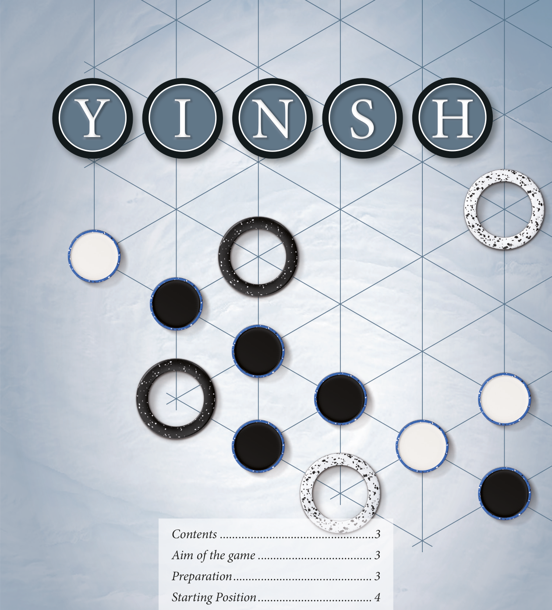
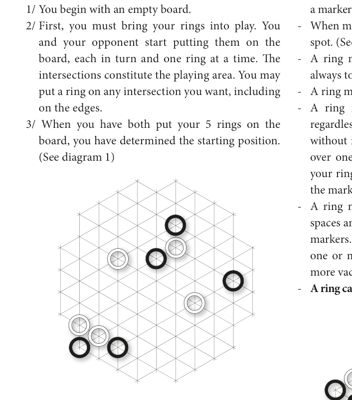
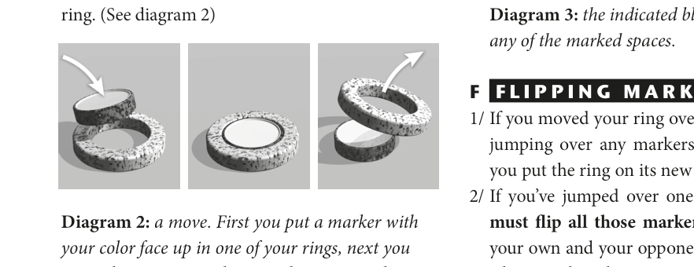
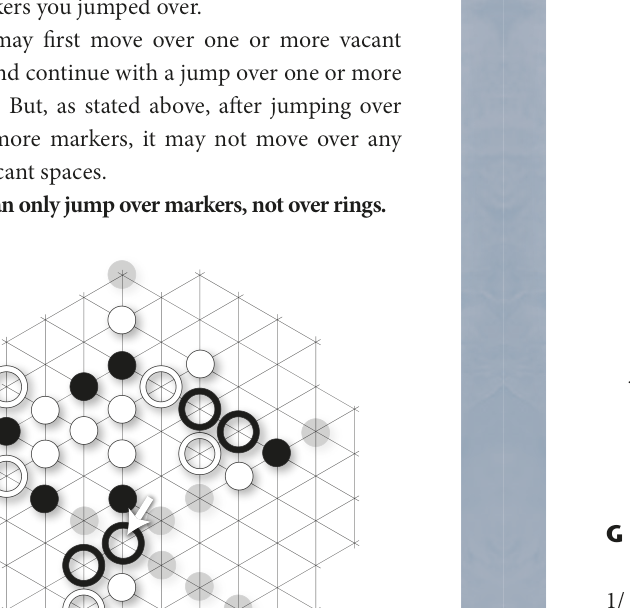
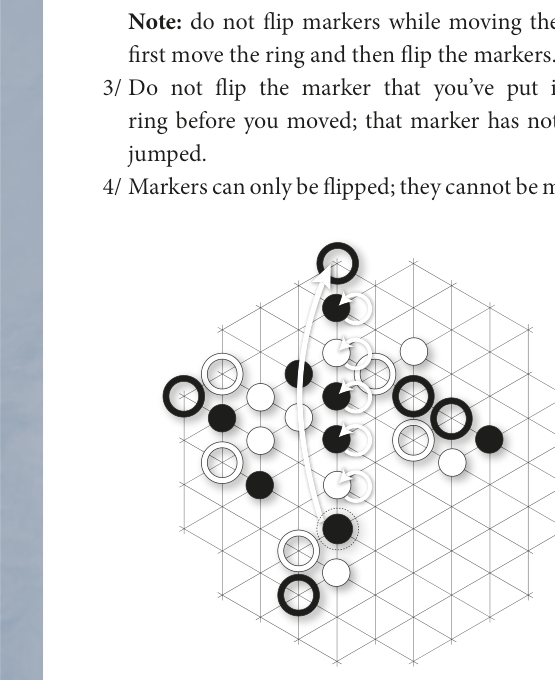
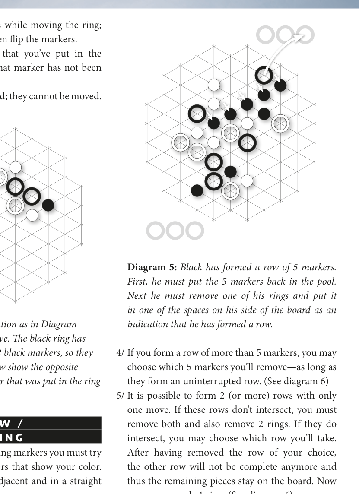
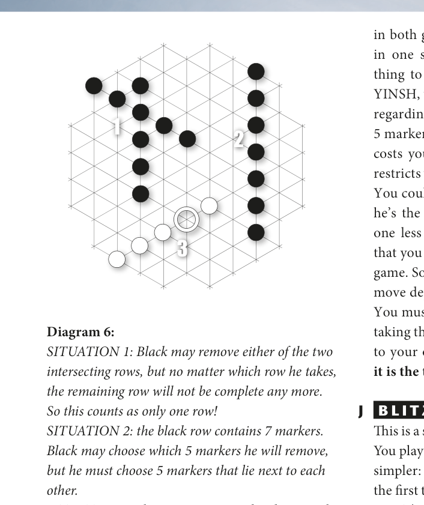
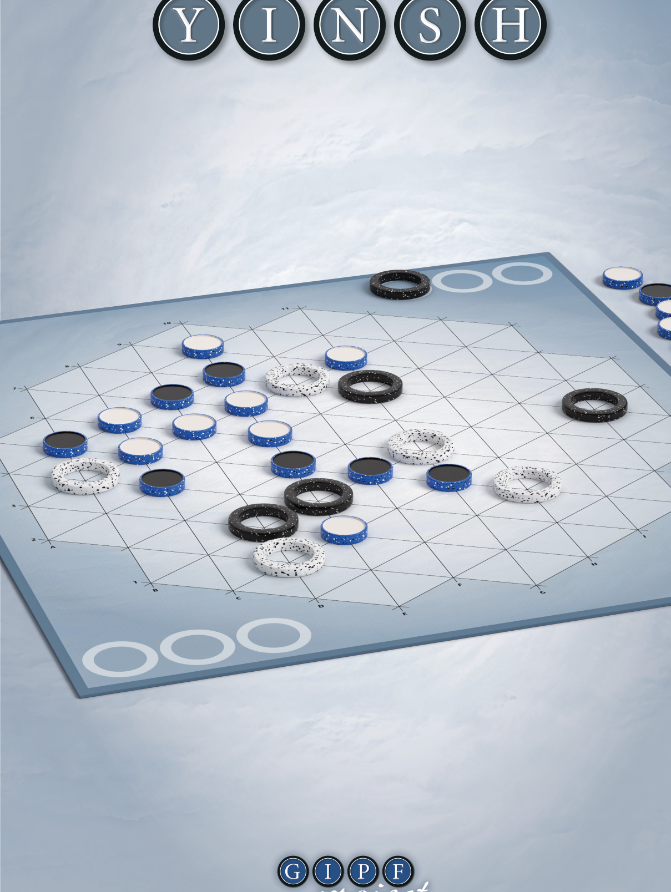

双方各以 5 枚圆环开始游戏。每当你用己方颜色朝上的标记物排成一行 5 枚，便可取走一枚己方圆环。率先取走 3 枚己方圆环的玩家获胜——换言之，你需要排成 3 行己方颜色的 5 枚标记物才能赢得比赛。






如果你熟悉 GIPF，一定会注意到 GIPF 与 YINSH 有诸多相通之处。排成一行并将其从棋盘上移除只是其中之二。更为微妙、但一旦领悟便意义深远的共性，是两款游戏中都蕴含的"矛盾性"：
在此情此景下正确的走法，换一个局面可能恰恰是最糟糕的选择。
玩 YINSH 时务必牢记这一点，尤其是在思考游戏目标时。排成一行 5 枚标记物固然使你离胜利更近，但同时也意味着失去一枚圆环，这当然会限制你后续的行动空间。你可以为对手排成一行——迫使对手少一枚圆环继续游戏——但这也可能恰好助对手踏上通往胜利的坦途。
所以，一步棋的好坏完全取决于当时的局面。你需要在主动出击与以退为进之间找到精妙的平衡。请始终铭记：决定胜负的是第三行！
这是 YINSH 的一种短促而快节奏的玩法。规则与上述完全相同，但目标更简单：只需排成一行即可获胜。率先将 5 枚己方颜色的标记物排成一行的玩家赢得比赛！就是这么简单，你觉得呢？
祝你游戏愉快！
